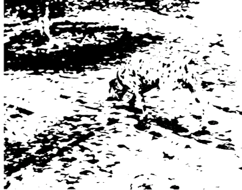
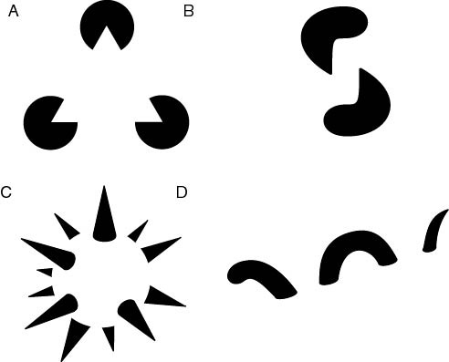
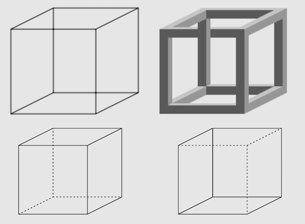
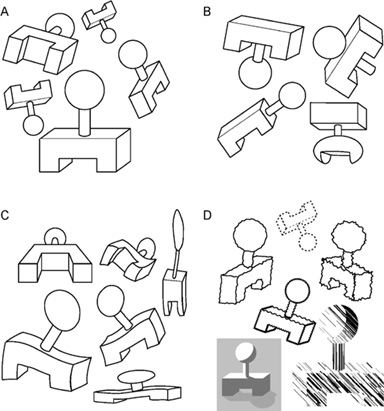
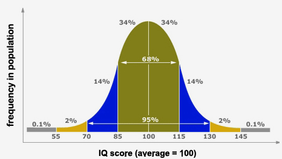

Cognition
Krzysztof Basiński
Cognition
What is cognition
“The mental action or process of acquiring knowledge and understanding through thought, experience, and the senses” (Oxford English Dictionary)
What is cognition
- Attention
- The formation of knowledge
- Memory
- Judgment and evaluation
- Reasoning and “computation”
- Problem solving and decision making
- Comprehension and production of language
Cognitive psychology
- Behaviorism, language and cognitive revolution
- 1959 – Noam Chomsky, critique of Verbal Behavior by Skinner
- Behaviorist theory struggles with explaining language
- A new paradigm in psychology – cognitive psychology
Noam Chomsky

Noam Chomsky
- Father of modern linguistics
- Universal grammar theory
- Chomsky’s Hierarchy - a theoretical model of formal languages (theoretical basis for computer programming languages)
- Attributed greatly to cognitive revolution
- Most frequently cited living scientist
The computer metaphor
- The mind is a “computer” that is physically implemented by neural activity in the brain
- Input via perception, output via behavior
Perception
Perception
Perception
- The tracks are converging – sensation
- The tracks are parallel – perception
Gestalt psychology
- A movement in German psychology, late 19th century
- It is not possible to describe the human mind by analyzing its structure, one needs to look at the global whole
- “The whole is something other than the sum of its parts” (Kurt Koffka)
Gestalt – emergence

Gestalt – emergence
- We see a dog (a Dalmatian?)
- We do not recognize its parts independently (nose, ears, head, paws)
- We see the dog in its entirety, at once
- “The whole is something other than the sum of its parts”
Gestalt – reification

Gestalt – reification
- Our perception can generate more information on the object than it is given in reality
- In picture A we see a triangle, though there is no triangle drawn
- In pictures B and D, the eye recognizes disparate shapes as “belonging” to a single shape
- In C a complete three-dimensional shape is seen, where actually no such thing is drawn
Gestalt - multistability

Gestalt - multistability
Gestalt - multistability
- Multistability is a tendency of ambiguous perceptual experiences to pop back and forth unstably between two or more alternative interpretations
- Gestalt psychologists described the effect but did not give an explanation
- The Necker Cube is used today to test computer-based models of perception
Gestalt - invariance

Gestalt - invariance
- Invariance is the property of perception whereby simple geometrical objects are recognized independent of rotation, translation, and scale; as well as several other variations such as elastic deformations, different lighting, and different component features
- These laws of perception were since explored by cognitive psychologists, and some are puzzling to this day
Perception today
- Perception is generative
- Same stimulus may be interpreted in different ways depending on:
- Context
- Who is looking
- Memory is used in perception
Memory
- Types of memory:
- Sensory, short-term and long-term memory (multi-store model of memory)
- Procedural and declarative memory
- Semantic and episodic memory
Memory as a process

Multi-store model (Atkinson, Shiffrin)

Properties of human memory
- Incredibly capacious – 2.5 petabytes? (2,500,000 GB)
- Long-lasting – some memories last a lifetime (some don’t last a minute)
- Prone to error (“what did you do on September 11th?”)
Intelligence
What is intelligence?
Capacity for logic, understanding, self-awareness, learning, emotional knowledge, reasoning, planning, creativity, critical thinking, and problem solving
What is intelligence?
The ability to perceive or infer information, and to retain it as knowledge to be applied towards adaptive behaviors within an environment.
Intelligence is problematic
- What if…
- someone is good at maths but bad at English?
- someone is good at English but bad at maths?
- someone is bad at English and maths but is a world-class pianist?
- Einstein was born in a hunter-gatherer tribe?
Intelligence is multi-dimensional
- People are good at different cognitive skills
- These tend to correlate with each other
- Overall intelligence (as measured by IQ) takes a lot of those skills into account
Intelligence Quotient - IQ

IQ Measures
- Wechsler Intelligence Scale (WAIS)
- Raven’s Progressive Matrices
WAIS example tasks
- Similarities: Describe how two words or concepts are similar.
- Vocabulary: Name objects in pictures or define words presented to them.
- Information: General knowledge questions.
WAIS example tasks
- Comprehension: Questions about social situations or common concepts.
- Digit Span: Listen to sequences of numbers orally and to repeat them as heard, in reverse order, and in ascending order.
- Arithmetic: Orally administered arithmetic word problems. Timed.
Raven’s Matrices
Nature vs. nurture
- IQ depends on nature (genetic factors)
- IQ depends on nurture (education, experience, age)
IQ correlates
- School performance (0.50 - 0.80)
- Job performance (0.20 - 0.60)
- Income (0.23)
- Crime (-0.20)
- Mortality/morbidity (-, very weak)
IQ - Facts and myths
- Can you teach intelligence?
- Yes, you can! To some degree…
- In fact, educated societies tend to get smarter over time
IQ - Facts and myths
- You are either born smart or stupid
- Yes and no
- There are significant genetic and environmental components of IQ
IQ - Facts and myths
- White/black/yellow/red people smarter than white/black/yellow/red people
- No!
- The question is in fact ill-posed
- IQ is defined through a mean of population. Thus, different cultures have by definition the same average IQ = 100.
IQ - Facts and myths
- Are rich people are smarter than poor people?
- Hard to say
- Correlation is 0.20 (very, very weak)
- Richer people might be better educated
Cognitive-Behavioral Therapy (CBT)
CBT
- A form of psychotherapy – tool for treatment of depression
- Used in many disorders, i.e. depression, anxiety disorders, obsessive-compulsive disorder, PTSD etc.
- Aim is to solve specific, actual problems of the individual
- Therapy by changing behavior and thinking
- A combination of behavioral and cognitive therapy techniques
CBT: basic assumptions

CBT: basic assumptions
- Behavior, cognitive and emotional processes are connected
- Disturbances in those three areas are sources of disorders
- Human behavior is not always based on rational thought
- Behavior may sometimes be formed by conditioning of responses that are not adaptational